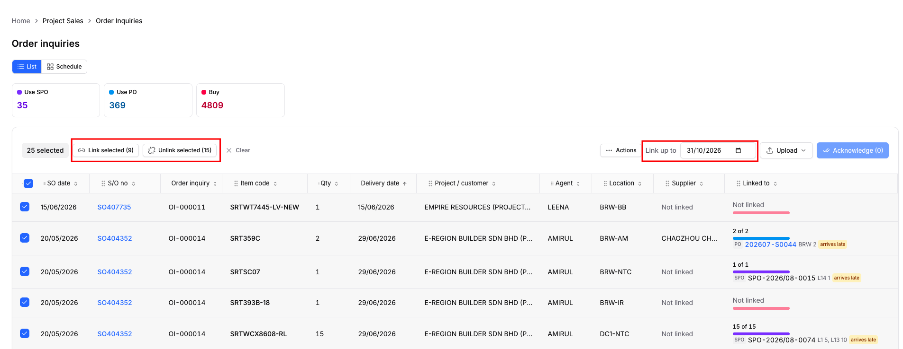
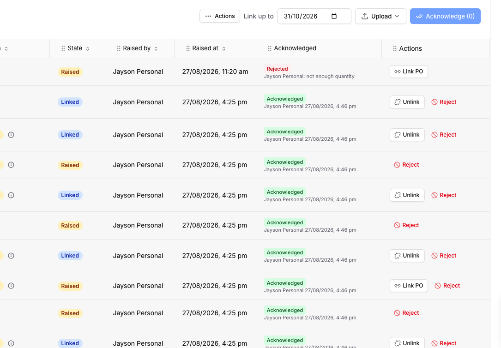
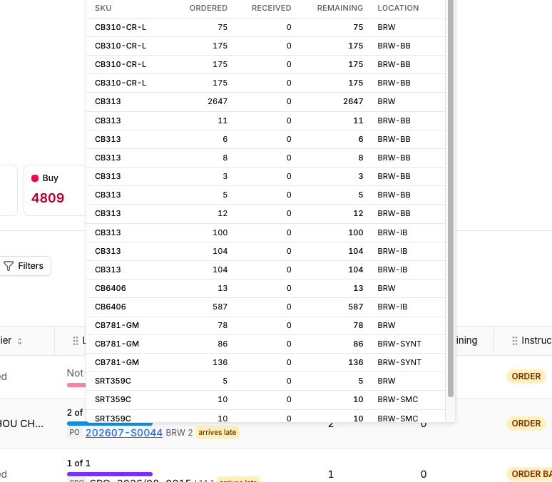

documentation/plans/scm/PLAN-scm-oi-draft-links.md · UAC alongside · 27 Aug 2026 · Status: PLANNED r3, R1 to R11 ruled, ready for a lane + go · Page /project-sales/order-inquiriesawaiting / changed, confirmed once the row is acknowledged. Confirm = today's acknowledge; Reject also drops the row's links.| Ask | Verified cause | Fix |
|---|---|---|
SPO shows L14 1, L1 5, L13 10, not BRW | orderInquiryWorklist.ts:138 prints line_label || location; BE _line_label = L{spo_line_number}, and every SPO allocation has a line number since migration 420, so location never wins. Dev DB: SPO-2026/08-0015's 62 allocations ALL carry warehouses (BRW 16, BRW-BB 23, BRW-NTC 9 ...). Display defect, data fine. Second gap: the banded history book has no location column (5,237 lines with warehouse_id NULL). | location first, line label into the title; fall back to raw location_code, else "no location" |
Is SPO read from spo_allocations? Purchase upload blocks SPO | Cascade reads spo_allocations open lines: correct. But the outstanding PO book SKIPS SPO- rows ("N rows are shipping orders (SPO), which this book does not carry"), and the history book writes them CLOSED (fully_received). Nothing on this page can create an OPEN SPO line; the only open ones came from the external API and the 52 scm_upload docs migration 420 moved. | R4: outstanding book intakes SPO rows as open allocations; absent from the next book = closed |
| "arrives late" → late by N days | link.late is a boolean (expected_date > row.delivery_date) | late_days on the wire, badge "late 12 d" |
| Ugly popup on the PO number | OrderInquiryPoDetailPopover: Radix Popover, 520px, clipped by the grid; PO only, SPO has no link at all | one Dialog lightbox for PO and SPO; popover deleted |
| Toolbar wraps to two rows | Right cluster = Actions + Link up to + Upload + Acknowledge; the shared toolbar has no second-row slot, Columns + refresh wrap under | Right cluster = Actions ▾ + Start ▾ only |
| No default filter | ?ack= honoured only when present; list opens on everything (dev DB: 24 acknowledged+placed, 22 acknowledged+raised, 7 awaiting) | default ?ack=to_confirm with the chip visible |
| Bulk reject | reject is per row only; refuses a fully linked row | batch endpoint, one reason; accepts placed rows, unlinks first |
Today

Proposed, one row
Today

Proposed
| Item code | Qty | Location | Outstanding PO/SPO | Taken by PO/SPO | Instruction | Confirmed |
|---|---|---|---|---|---|---|
| SRTWT7445-LV-NEW | 1 | BRW-BB | Not found (new order) | 0 | ORDER | To confirm |
| SRT359C | 2 | BRW-AM | 2 of 2 PO202607-S0044 BRW 2 late 61 d | 2 | ORDER | To confirm |
| SRTSC07 | 1 | BRW-NTC | 1 of 1 SPOSPO-2026/08-0015 BRW 1 late 12 d | 1 | ORDER BACK | To confirm |
| SRTWCX8608-RL | 15 | DC1-NTC | ✓15 of 15 SPOSPO-2026/08-0074 BRW 5, BRW-IB 10 | 15 | ORDER BACK | Confirmed Jayson Personal 27/08, 4:46 pm |
Today

Proposed: one Dialog for PO and SPO
| SKU | Allocated | Received | Remaining | Location |
|---|---|---|---|---|
| SRTSC07 | 4 | 0 | 4 | BRW |
| CB313 | 2647 | 0 | 2647 | BRW |
| CB313 | 104 | 0 | 104 | MWH |
Allocated to
| Inquiry | SO | Item | Qty | |
|---|---|---|---|---|
| OI-000014 | SO404352 | SRTSC07 | 1 | Proposed |
| OI-000011 | SO407735 | CB313 | 12 | Confirmed |
GET /order-inquiries/po/{id} + allocations. SPO: new GET /order-inquiries/spo/{spo_number}. Scrolls inside itself, Escape closes, 375-safe. SPO lines are always at a pool (BRW, MWH).| Event | Effect |
|---|---|
| Board Confirm / OI form import / planning-change apply | rows raised awaiting AND the cascade runs for them at once (trigger="raise"), from the seam project_supply_service.py:3188 the handshake left dormant. Plan horizon by default, no prompt on the board. |
| Confirm (N) | = today's acknowledge_rows: stamp, then cascade fills any unlinked remainder. Draft links need no write. |
| Reject / Reject selected (N) | one reason for the batch; per row: unplace every link (PO qty freed), rejected, board line uncovered as today. Accepts fully linked rows. |
| Auto link all / Link now / PO-confirm cascade / fresh raise | may UNPLACE and re-deal DRAFT links (rows not acknowledged) so a nearer document from a new book takes over; a confirmed row's links are never touched by anything automatic. |
| CS amends a confirmed row | unchanged: settle-in-place, links kept, changed; reads as draft again, so the buyer looks again. |
| Do drafts occupy PO quantity? | YES in _candidates_for_row (unchanged: remaining = ordered - received - other links). Two drafts never point at the same unit; Confirm can never fail for quantity. PO page Allocated to shows Proposed / Confirmed. |
| Plan demand / committed_v | unchanged: acknowledged + changed unlinked remainder; awaiting = chip "N to confirm". |
FAMILY_SPO rows. Writer upserts spo_allocations on (company, spo_number, spo_line_number): line_status open, received from the book, warehouse by code, raw location_code kept, source_system scm_upload. SPO lines of scm_upload docs absent from the re-uploaded book are closed (trust the book, 26 Aug stale-SPO ruling). Test result and summary report SPO documents / lines / unknown locations. History book untouched (stays closed history). No migration: 420 already made shipment and warehouse nullable and added location_code.| # | Ruling |
|---|---|
| R1 | Draft derived from the row's ack_state, no link column |
| R2 | Re-deal drafts only; confirmed links never touched automatically |
| R3 | To confirm = awaiting + changed |
| R4 | Outstanding PO book intakes SPO rows as open allocations; absent next book = closed |
| R5 | SPO candidates for EVERY linkable row, SPO first then PO ("SPO link is always one") |
| R6 | Plan horizon at raise, no prompt |
| R7 | UI rename only |
| R8 / R9 | Row-level buttons dropped, bulk only; lightbox read-only |
| notes | Start = Upload purchase orders + Confirm only · Auto link all date = "Purchase order cut off" · SPO always at a pool location (BRW, MWH) |
spo_allocations fill with SPO rows out of purchase_orders): yes, that is migration 420's job. Dev copy measured 79,969 rows / 3,517 docs moved, all closed history except 52 open scm_upload docs (715 lines). Closed rows never reach the cascade or the Use SPO card; from now on R4 is what adds OPEN lines. 420 finished on prod (captain, 27 Aug). 420 MOVED, it did not copy: dev copy holds 0 SPO documents in purchase_orders (5,238 rows, all PO). The only copy of the SPO history is now spo_allocations, with 12,392 claims hanging off it. Removing those rows = deleting the SPO history outright, not a duplicate.ON DELETE SET NULL) but lose their pointer. And it is pointless alone: the next "Upload purchase history" files every SPO row back into spo_allocations (po_history_service._write_shipping_order), so that channel would have to stop filing SPO too. Nothing on this page reads them either way. Recommend keep; your call, separate go._candidates_for_row's SPO side filters to the pool set; a non-pool SPO line is visible in the lightbox, never drafted.late_days + SPO location fallback + to_confirm; (b) re-deal + raise-time cascade; (c) reject drops links + batch reject; (d) SPO intake from the outstanding book; (e) SPO detail + PO allocations on the detail. Then wire.source_system = scm_upload. (4) Main has two alembic heads until #348's merge rev lands; this PR expects NO migration.